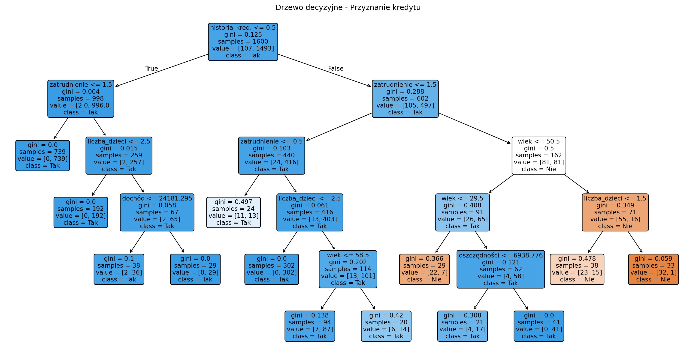

import pandas as pd
import numpy as np
from sklearn.tree import DecisionTreeClassifier
from sklearn.model_selection import train_test_split
from sklearn.metrics import accuracy_score, classification_report, confusion_matrix
from sklearn import tree
import matplotlib.pyplot as plt
# Tworzenie realistycznych danych klientów banku
np.random.seed(42)
n_clients = 2000
data = pd.DataFrame({
'wiek': np.random.randint(18, 70, n_clients),
'dochod': np.random.lognormal(10, 0.5, n_clients), # log-normal dla dochodów
'historia_kredytowa': np.random.choice(['dobra', 'średnia', 'słaba'], n_clients, p=[0.6, 0.3, 0.1]),
'zatrudnienie': np.random.choice(['stałe', 'tymczasowe', 'bezrobotny'], n_clients, p=[0.7, 0.25, 0.05]),
'oszczednosci': np.random.exponential(20000, n_clients),
'liczba_dzieci': np.random.randint(0, 4, n_clients)
})
# Realistyczna logika decyzyjna banku
def czy_kredyt(row):
score = 0
# Wiek (30-50 lat = najlepsi klienci)
if 30 <= row['wiek'] <= 50:
score += 2
elif row['wiek'] < 25 or row['wiek'] > 60:
score -= 1
# Dochód
if row['dochod'] > 50000:
score += 3
elif row['dochod'] > 30000:
score += 1
else:
score -= 2
# Historia kredytowa
if row['historia_kredytowa'] == 'dobra':
score += 2
elif row['historia_kredytowa'] == 'słaba':
score -= 3
# Zatrudnienie
if row['zatrudnienie'] == 'stałe':
score += 2
elif row['zatrudnienie'] == 'bezrobotny':
score -= 4
# Oszczędności
if row['oszczednosci'] > 50000:
score += 1
# Dzieci (więcej dzieci = większe ryzyko)
score -= row['liczba_dzieci'] * 0.5
# Końcowa decyzja z odrobiną losowości
probability = 1 / (1 + np.exp(-score + np.random.normal(0, 0.5)))
return probability > 0.5
data['kredyt_przyznany'] = data.apply(czy_kredyt, axis=1)
print("Statystyki klientów:")
print(data.describe())
print(f"\nOdsetek przyznanych kredytów: {data['kredyt_przyznany'].mean():.1%}")Decision Trees — proste drzewa decyzyjne
🌳 Czym są Decision Trees?
Decision Trees to jeden z najbardziej intuicyjnych algorytmów ML, który podejmuje decyzje jak człowiek - zadając szereg pytań typu “tak/nie” i na podstawie odpowiedzi klasyfikuje lub przewiduje wartości.
💡 Intuicja
Wyobraź sobie lekarza, który diagnozuje chorobę: “Czy ma gorączkę? TAK → Czy boli gardło? TAK → Czy ma katar? NIE → Prawdopodobnie angina”. Decision Tree działa dokładnie tak samo!
🎯 Praktyczny przykład: klasyfikacja klientów banku
Czy klient weźmie kredyt na podstawie jego profilu?
Pokaż statystyki i odsetki przyznanych kredytów
Statystyki klientów:
wiek dochod oszczednosci liczba_dzieci
count 2000.000000 2000.000000 2000.000000 2000.000000
mean 43.805500 25726.361013 19950.270464 1.523000
std 14.929203 14090.406882 20299.940268 1.130535
min 18.000000 4047.221838 27.128881 0.000000
25% 31.000000 15922.761710 5923.833818 1.000000
50% 44.000000 22782.391426 13844.909016 2.000000
75% 56.000000 31922.003675 27566.091135 3.000000
max 69.000000 112447.929023 165194.684774 3.000000
Odsetek przyznanych kredytów: 63.8%🔧 Budowanie modelu krok po kroku
1) Przygotowanie danych
# Encoding kategorycznych zmiennych
from sklearn.preprocessing import LabelEncoder
data_encoded = data.copy()
le_historia = LabelEncoder()
le_zatrudnienie = LabelEncoder()
data_encoded['historia_kredytowa_num'] = le_historia.fit_transform(data['historia_kredytowa'])
data_encoded['zatrudnienie_num'] = le_zatrudnienie.fit_transform(data['zatrudnienie'])
# Features do modelu
feature_columns = ['wiek', 'dochod', 'historia_kredytowa_num', 'zatrudnienie_num', 'oszczednosci', 'liczba_dzieci']
X = data_encoded[feature_columns]
y = data_encoded['kredyt_przyznany']
# Podział train/test
X_train, X_test, y_train, y_test = train_test_split(X, y, test_size=0.2, random_state=42)
print(f"Dane treningowe: {len(X_train)} klientów")
print(f"Dane testowe: {len(X_test)} klientów")
Pokaż wyniki dane treningowe i testowe
Dane treningowe: 1600 klientów
Dane testowe: 400 klientów2) Trenowanie Decision Tree
# Tworzenie modelu z ograniczeniami (żeby nie był za głęboki)
dt_model = DecisionTreeClassifier(
max_depth=5, # maksymalna głębokość drzewa
min_samples_split=50, # min. próbek do podziału węzła
min_samples_leaf=20, # min. próbek w liściu
random_state=42
)
# Trenowanie
dt_model.fit(X_train, y_train)
print("Model wytrenowany!")
print(f"Głębokość drzewa: {dt_model.tree_.max_depth}")
print(f"Liczba liści: {dt_model.tree_.n_leaves}")
Pokaż parametry wytrenowanego modelu
Model wytrenowany!
Głębokość drzewa: 5
Liczba liści: 203) Ewaluacja modelu
# Predykcje
y_pred = dt_model.predict(X_test)
y_pred_proba = dt_model.predict_proba(X_test)[:, 1]
# Metryki
accuracy = accuracy_score(y_test, y_pred)
print(f"\nDokładność modelu: {accuracy:.1%}")
# Szczegółowy raport
print("\nRaport klasyfikacji:")
print(classification_report(y_test, y_pred))
# Confusion Matrix
cm = confusion_matrix(y_test, y_pred)
print("\nConfusion Matrix:")
print("Przewidywane: Nie Tak")
print(f"Rzeczywiste Nie: {cm[0,0]:3d} {cm[0,1]:3d}")
print(f"Rzeczywiste Tak: {cm[1,0]:3d} {cm[1,1]:3d}")
Pokaż wyniki
Confusion Matrix:
Przewidywane: Nie Tak
Rzeczywiste Nie: 122 34
Rzeczywiste Tak: 27 217🎨 Wizualizacja drzewa decyzyjnego
import pandas as pd
import numpy as np
from sklearn.tree import DecisionTreeClassifier
from sklearn.model_selection import train_test_split
from sklearn.preprocessing import LabelEncoder
from sklearn.metrics import accuracy_score, classification_report, confusion_matrix
from sklearn import tree
import matplotlib.pyplot as plt
# Tworzenie przykładowych danych (kompletny przykład)
np.random.seed(42)
n_clients = 2000
data = pd.DataFrame({
'wiek': np.random.randint(18, 70, n_clients),
'dochod': np.random.lognormal(10, 0.5, n_clients),
'historia_kredytowa': np.random.choice(['dobra', 'średnia', 'słaba'], n_clients, p=[0.6, 0.3, 0.1]),
'zatrudnienie': np.random.choice(['stałe', 'tymczasowe', 'bezrobotny'], n_clients, p=[0.7, 0.25, 0.05]),
'oszczednosci': np.random.exponential(20000, n_clients),
'liczba_dzieci': np.random.randint(0, 4, n_clients)
})
# Prosta logika przyznawania kredytu
def czy_kredyt(row):
score = 0
if 30 <= row['wiek'] <= 50:
score += 2
if row['dochod'] > 50000:
score += 3
if row['historia_kredytowa'] == 'dobra':
score += 2
if row['zatrudnienie'] == 'stałe':
score += 2
if row['oszczednosci'] > 50000:
score += 1
score -= row['liczba_dzieci'] * 0.5
probability = 1 / (1 + np.exp(-score + np.random.normal(0, 0.5)))
return probability > 0.5
data['kredyt_przyznany'] = data.apply(czy_kredyt, axis=1)
# Encoding i model
data_encoded = data.copy()
le_historia = LabelEncoder()
le_zatrudnienie = LabelEncoder()
data_encoded['historia_kredytowa_num'] = le_historia.fit_transform(data['historia_kredytowa'])
data_encoded['zatrudnienie_num'] = le_zatrudnienie.fit_transform(data['zatrudnienie'])
feature_columns = ['wiek', 'dochod', 'historia_kredytowa_num', 'zatrudnienie_num', 'oszczednosci', 'liczba_dzieci']
X = data_encoded[feature_columns]
y = data_encoded['kredyt_przyznany']
X_train, X_test, y_train, y_test = train_test_split(X, y, test_size=0.2, random_state=42)
# Trenowanie drzewa
dt_model = DecisionTreeClassifier(max_depth=5, min_samples_split=50, min_samples_leaf=20, random_state=42)
dt_model.fit(X_train, y_train)
# Ewaluacja
y_pred = dt_model.predict(X_test)
accuracy = accuracy_score(y_test, y_pred)
cm = confusion_matrix(y_test, y_pred)
# Ważność features
feature_names = ['wiek', 'dochód', 'historia_kred.', 'zatrudnienie', 'oszczędności', 'liczba_dzieci']
importance = dt_model.feature_importances_
feature_importance = pd.DataFrame({
'feature': feature_names,
'importance': importance
}).sort_values('importance', ascending=False)
# Przygotuj wykres drzewa
plt.figure(figsize=(20, 10))
tree.plot_tree(dt_model,
feature_names=feature_names,
class_names=['Nie', 'Tak'],
filled=True,
rounded=True,
fontsize=10)
plt.title("Drzewo decyzyjne - Przyznanie kredytu")
plt.close()
print(f"Wyniki modelu Decision Tree:")
print(f"Głębokość drzewa: {dt_model.tree_.max_depth}")
print(f"Liczba liści: {dt_model.tree_.n_leaves}")
print(f"Dokładność modelu: {accuracy:.1%}")
print(f"\nStatystyki danych:")
print(f"Dane treningowe: {len(X_train)} klientów")
print(f"Dane testowe: {len(X_test)} klientów")
print(f"Odsetek przyznanych kredytów: {data['kredyt_przyznany'].mean():.1%}")
print("\nConfusion Matrix:")
print("Przewidywane: Nie Tak")
print(f"Rzeczywiste Nie: {cm[0,0]:3d} {cm[0,1]:3d}")
print(f"Rzeczywiste Tak: {cm[1,0]:3d} {cm[1,1]:3d}")
print("\nWażność cech:")
for _, row in feature_importance.iterrows():
print(f"{row['feature']}: {row['importance']:.3f}")
# Odtwórz wykres drzewa
plt.figure(figsize=(20, 10))
tree.plot_tree(dt_model,
feature_names=feature_names,
class_names=['Nie', 'Tak'],
filled=True,
rounded=True,
fontsize=10)
plt.title("Drzewo decyzyjne - Przyznanie kredytu")
plt.show()
Pokaż wyniki i drzewo decyzyjne
Wyniki modelu Decision Tree:
Głębokość drzewa: 5
Liczba liści: 13
Dokładność modelu: 95.0%
Statystyki danych:
Dane treningowe: 1600 klientów
Dane testowe: 400 klientów
Odsetek przyznanych kredytów: 93.2%
Confusion Matrix:
Przewidywane: Nie Tak
Rzeczywiste Nie: 19 11
Rzeczywiste Tak: 9 361
Ważność cech:
zatrudnienie: 0.441
wiek: 0.317
historia_kred.: 0.178
liczba_dzieci: 0.055
oszczędności: 0.008
dochód: 0.001
🔍 Interpretacja decyzji dla konkretnego klienta
# Funkcja do interpretacji ścieżki decyzyjnej
def explain_decision(model, X_sample, feature_names):
# Pobierz ścieżkę w drzewie
leaf_id = model.decision_path(X_sample.reshape(1, -1)).toarray()[0]
feature = model.tree_.feature
threshold = model.tree_.threshold
print("Ścieżka decyzyjna:")
for node_id in range(len(leaf_id)):
if leaf_id[node_id] == 1: # jeśli węzeł jest na ścieżce
if feature[node_id] != -2: # jeśli nie jest liściem
feature_name = feature_names[feature[node_id]]
threshold_val = threshold[node_id]
feature_val = X_sample[feature[node_id]]
if feature_val <= threshold_val:
condition = "<="
else:
condition = ">"
print(f" {feature_name} ({feature_val:.0f}) {condition} {threshold_val:.0f}")
# Przykład dla konkretnego klienta
sample_client = X_test.iloc[0]
prediction = dt_model.predict([sample_client])[0]
probability = dt_model.predict_proba([sample_client])[0]
print(f"Klient testowy:")
print(f"Wiek: {sample_client['wiek']}")
print(f"Dochód: {sample_client['dochod']:.0f}")
print(f"Oszczędności: {sample_client['oszczednosci']:.0f}")
print(f"\nDecyzja: {'KREDYT PRZYZNANY' if prediction else 'KREDYT ODRZUCONY'}")
print(f"Prawdopodobieństwo: {probability[1]:.1%}")
explain_decision(dt_model, sample_client.values, feature_names)
Pokaż dane klienta testowego
Klient testowy:
Wiek: 56.0
Dochód: 7927
Oszczędności: 32270
Decyzja: KREDYT ODRZUCONY
Prawdopodobieństwo: 3.0%🎯 Różne zastosowania Decision Trees
1) Medyczna diagnoza
# Przykład klasyfikacji ryzyka chorób serca
medical_features = ['wiek', 'cholesterol', 'ciśnienie', 'BMI', 'pali_papierosy']
# Target: 'ryzyko_chorób_serca' (wysokie/niskie)
medical_tree = DecisionTreeClassifier(max_depth=4)
# Model automatycznie znajdzie progi: "Jeśli cholesterol > 240 I BMI > 30 ORAZ wiek > 50..."2) Marketing - segmentacja klientów
# Przewidywanie czy klient kupi produkt premium
marketing_features = ['dochód_roczny', 'wiek', 'wykształcenie', 'poprzednie_zakupy']
# Target: 'kupi_premium' (tak/nie)
marketing_tree = DecisionTreeClassifier(max_depth=3, min_samples_leaf=100)
# Wynik: jasne reguły marketingowe do targetowania reklam3) HR - decyzje o zatrudnieniu
# Przewidywanie sukcesu kandydata w rekrutacji
hr_features = ['doświadczenie_lat', 'wykształcenie', 'wynik_testów', 'referencje']
# Target: 'zatrudniony' (tak/nie)
hr_tree = DecisionTreeClassifier(max_depth=5)
# Wynik: automatyczne zasady rekrutacyjne⚙️ Tuning parametrów
from sklearn.model_selection import GridSearchCV
# Najważniejsze parametry do tuningu
param_grid = {
'max_depth': [3, 5, 7, 10, None],
'min_samples_split': [20, 50, 100],
'min_samples_leaf': [10, 20, 50],
'criterion': ['gini', 'entropy']
}
# Grid search z cross-validation
grid_search = GridSearchCV(
DecisionTreeClassifier(random_state=42),
param_grid,
cv=5,
scoring='accuracy',
n_jobs=-1
)
grid_search.fit(X_train, y_train)
print("Najlepsze parametry:")
print(grid_search.best_params_)
print(f"Najlepsza dokładność CV: {grid_search.best_score_:.1%}")
# Model z najlepszymi parametrami
best_model = grid_search.best_estimator_
best_accuracy = accuracy_score(y_test, best_model.predict(X_test))
print(f"Dokładność na test set: {best_accuracy:.1%}")
Pokaż najlepsze parametry
Najlepsze parametry:
{'criterion': 'gini', 'max_depth': 5, 'min_samples_leaf': 20, 'min_samples_split': 20}
Najlepsza dokładność CV: 96.5%
Dokładność na test set: 95.0%⚠️ Problemy i rozwiązania
1) Overfitting - drzewo za głębokie
# Problem: drzewo "pamięta" dane treningowe
overfitted_tree = DecisionTreeClassifier() # bez ograniczeń!
overfitted_tree.fit(X_train, y_train)
train_acc = accuracy_score(y_train, overfitted_tree.predict(X_train))
test_acc = accuracy_score(y_test, overfitted_tree.predict(X_test))
print(f"Overfitted model:")
print(f"Train accuracy: {train_acc:.1%}")
print(f"Test accuracy: {test_acc:.1%}")
print(f"Różnica: {train_acc - test_acc:.1%} - to overfitting!")
# Rozwiązanie: ograniczenia
pruned_tree = DecisionTreeClassifier(max_depth=5, min_samples_leaf=20)
pruned_tree.fit(X_train, y_train)
train_acc_pruned = accuracy_score(y_train, pruned_tree.predict(X_train))
test_acc_pruned = accuracy_score(y_test, pruned_tree.predict(X_test))
print(f"\nPruned model:")
print(f"Train accuracy: {train_acc_pruned:.1%}")
print(f"Test accuracy: {test_acc_pruned:.1%}")
print(f"Różnica: {train_acc_pruned - test_acc_pruned:.1%} - znacznie lepiej!")
Pokaż wyniki
Overfitted model:
Train accuracy: 100.0%
Test accuracy: 94.8%
Różnica: 5.2% - to overfitting!
Pruned model:
Train accuracy: 96.7%
Test accuracy: 95.0%
Różnica: 1.7% - znacznie lepiej!2) Brak stabilności - małe zmiany = różne drzewa
# Problem demonstracji
results = []
for i in range(10):
# Różne random_state = różne drzewa
tree_test = DecisionTreeClassifier(random_state=i, max_depth=5)
tree_test.fit(X_train, y_train)
acc = accuracy_score(y_test, tree_test.predict(X_test))
results.append(acc)
print(f"Dokładność różnych drzew: {min(results):.1%} - {max(results):.1%}")
print(f"Rozrzut: {max(results) - min(results):.1%}")
print("Rozwiązanie: Random Forest (następna ściągawka!)")
Pokaż wyniki
Dokładność różnych drzew: 96.2% - 96.2%
Rozrzut: 0.0%
Rozwiązanie: Random Forest (następna ściągawka!)🌍 Real-world przypadki użycia
- Bankowość: Ocena ryzyka kredytowego, wykrywanie fraudów
- Medycyna: Systemy wspomagania diagnostyki, triage pacjentów
- E-commerce: Rekomendacje produktów, ustalanie cen dynamicznych
- HR: Automatyzacja procesów rekrutacyjnych
- Marketing: Segmentacja klientów, personalizacja oferowania
💡 Kiedy używać Decision Trees?
✅ UŻYJ GDY:
- Potrzebujesz interpretowalnego modelu
- Dane mają kategoryczne zmienne
- Chcesz zrozumieć “dlaczego” model podjął decyzję
- Masz nieliniowe zależności w danych
- Braków w danych nie trzeba impute’ować
❌ NIE UŻYWAJ GDY:
- Potrzebujesz najwyższej dokładności (użyj Random Forest/XGBoost)
- Masz bardzo głębokie wzorce w danych (użyj Neural Networks)
- Dane są bardzo hałaśliwe
- Przewidujesz wartości ciągłe (lepiej Linear Regression)
Następna ściągawka: Random Forest - zespół drzew! 🌲🌲🌲